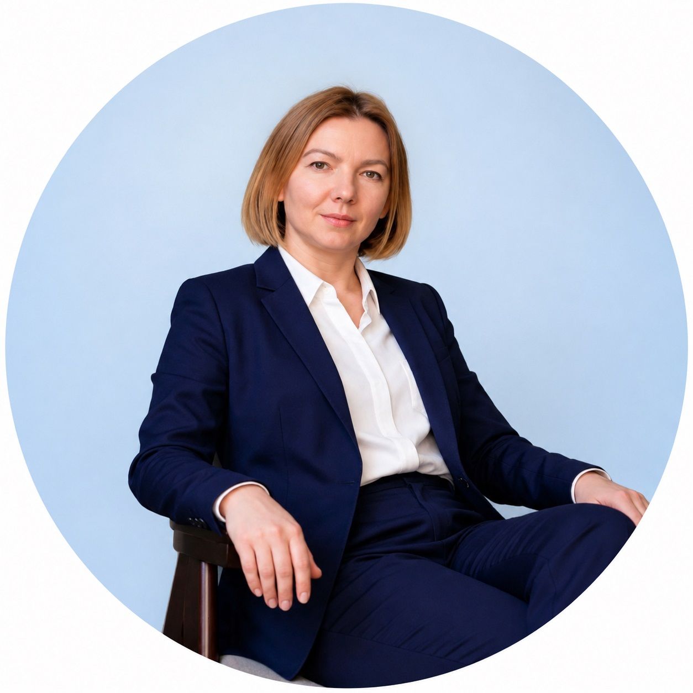

Сильные стороны
- Анализ финансовой отчётности
- Планирование финансов
- Автоматизация финансового учёта
- Финансовое моделирование
- Бюджетирование
- Управленческий учёт
- Поиск точек роста и снижение расходов
Каролина Василенко — финансист и эксперт по оцифровке бизнеса
17 лет работаю в экономике и финансах, строю управленческий учёт и финансовые модели, чтобы собственник видел реальную прибыль, движение денег и точки роста своего бизнеса.

С чем приходят
Это те вопросы, которые чаще всего остаются без ответа, когда учёт ведётся в таблицах или только в бухгалтерии.
Сколько на самом деле зарабатывает бизнес и что остаётся собственнику?
Куда уходят деньги и почему прибыль есть, а денег на счетах нет?
Какое направление или проект приносит прибыль, а какое генерирует убытки?
Как планировать денежные потоки и не попадать в кассовые разрывы?
Сколько стоит проект и какая в нём реальная маржинальность?
Какие показатели улучшить, чтобы прибыль выросла без роста расходов?
Обо мне
Каролина Василенко — финансист и эксперт по оцифровке бизнеса. Более 20 разработанных финансовых моделей, сертификат CIMA по управленческому учёту. Помогаю собственникам перевести финансы из ощущений в цифры.
Работаю с разными моделями бизнеса — от производства и проектных компаний до онлайн-школ и клиник. Это позволяет быстро находить, где именно в вашей отрасли теряется прибыль.
Услуги
Набор инструментов подбирается под задачу и масштаб компании: от базового контроля денег до полноценной системы управленческого учёта.
Прозрачная картина всех поступлений и выплат: видно, откуда приходят деньги и куда они уходят.
График будущих платежей, чтобы заранее видеть дефицит и не допускать кассовых разрывов.
Реальная прибыль по периодам и направлениям, а не остаток на расчётном счёте.
Оценка экономики проекта до старта: цена, себестоимость, маржинальность.
Понимание структуры активов, обязательств и собственного капитала компании.
Планирование сценариев: просчитываем, как изменения в доходах и расходах повлияют на деньги компании.
Чистый поток по месяцам — хватает ли поступлений денег на текущие платежи.
Динамика маржи по кварталам показывает, растёт ли бизнес эффективно.
Куда уходят деньги: структура затрат в разрезе основных статей.
Тарифы
Внедрение системы учёта и дальнейшее сопровождение с регулярными встречами по цифрам.
Цены ориентировочные и могут корректироваться после оценки сложности проекта и наличия/отсутствия финменеджера в команде.
Кейсы
Внедрили ДДС, платёжный календарь и ОПиУ.
Определили наиболее прибыльных клиентов и товары, посчитали оборачиваемость.
Пересмотрели ассортиментную матрицу и мотивацию менеджеров продаж.
Собственник не знал прибыль по направлениям и причины кассовых разрывов.
Внедрили ДДС, ОПиУ и баланс в Финтабло, калькулятор проектов и платёжный календарь.
При росте продаж денег на счетах становилось меньше.
Нашли причину: компания возвращала клиентам 10% после подписания акта, но рабочим платили процент от полной суммы договора.
Дополнительно
Форматы для тех, кому пока не нужно полное внедрение системы учёта.
Знакомство, разбор задачи и текущей ситуации в финансах.
Проверка текущих отчётов: что считается неверно и какие данные искажают картину.
Ответы на точечные вопросы по финансам и управленческому учёту.
Детальная финансовая модель по текущему бизнесу или будущим проектам. Показывает влияние факторов на чистую прибыль и помогает понять, что мешает бизнесу и какие показатели стоит улучшить.
Границы работы
Честно обозначаю рамки, чтобы ожидания совпадали с результатом.
Не работаю с банками и не договариваюсь о кредитах
Не консультирую по бухгалтерии и налогам
Не консультирую по инвестициям
Не принимаю решения за собственников
Не веду первичную документацию
Не консультирую по юридическим вопросам
Контакты
Обсудим вашу ситуацию, задачи и то, какие отчёты действительно нужны бизнесу сейчас. Напишите удобным способом — отвечу лично.